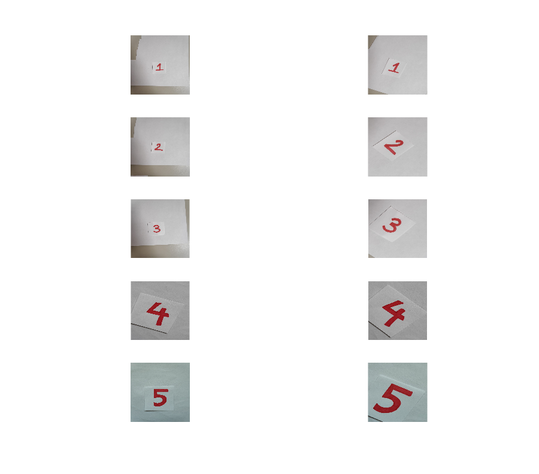
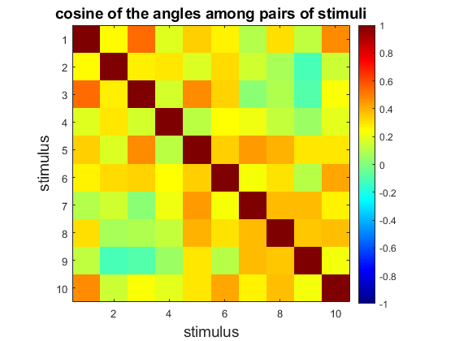
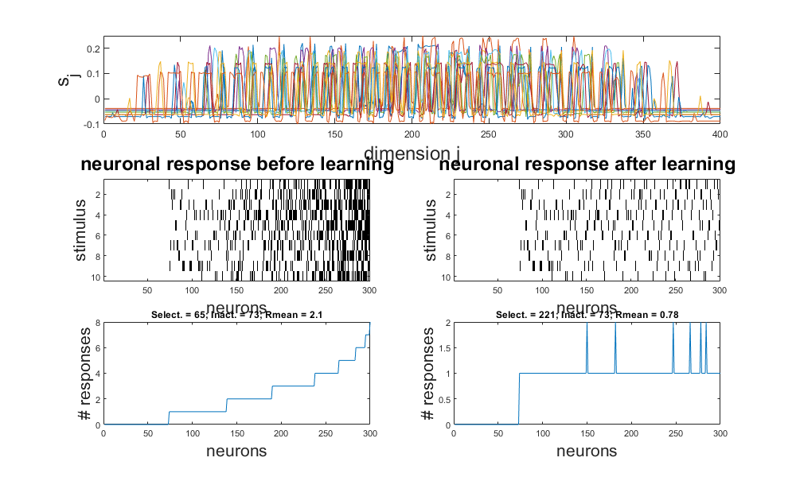
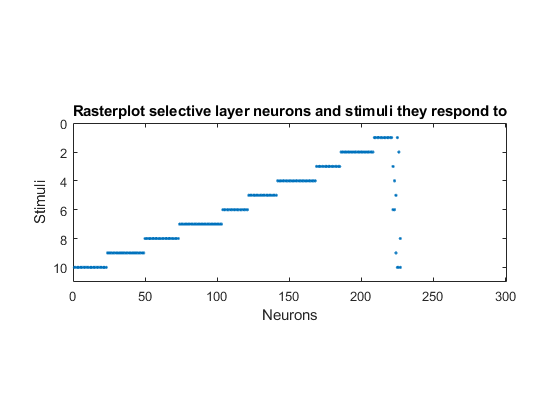
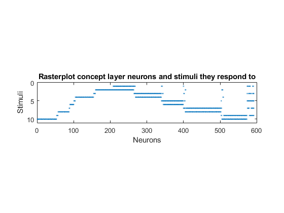

Script for testing association: raw images
Contents
Prepare enviroment
clear
close all
rng(3)
path(path,'MatFunc/Vision')
path(path,'MatFunc/Accuracy')
path(path,'MatFunc/Simulate')
path(path,'MatFunc/Misc')
Read training data
Figures = {'One','Two','Three','Four','Five'};
FLDR = 'Images/RawTrain';
PlotFLG = true;
figure('color','w','position',[100 100 900 900])
[imgs, class] = ImportImagesEvalRaw(FLDR, Figures, PlotFLG);

Sensory stimuli (and angles between them)
s = imgs;
[n,~] = size(s);
s = sqrt(3/n)*(s - mean(s))./std(s);
nrmS = sqrt(sum(s.^2));
S = s./nrmS;
CosAngle = S'*S;
figure('color','w')
imagesc(CosAngle,[-1 1])
axis square
colorbar
colormap('jet')
xlabel('stimulus','FontSize',14)
ylabel('stimulus','FontSize',14)
title('cosine of the angles among pairs of stimuli','FontSize',14)

Do simulations with Option D. Selective layer
M = 300;
Tmax = 400;
Th = 0.8;
h = 0.0025;
d = 150;
loc = M/20;
[n,L] = size(imgs);
f = @(t) mod(round(2*t),L)+1;
alpha = 20;
psl = 0.975;
delta = sqrt(1 - (2*norminv(psl) / sqrt(5*n)));
b2 = (Th/delta)^2;
W0 = 2*rand(n,M) - 1;
[~,id] = sort(sum(s'*W0 > Th));
W0 = W0(:,id);
W = SimulateNeurons4Loc(Tmax, h, W0, s, f, alpha, b2, Th, d, loc);
figure('color','w','position',[100 100 1000 600])
PlotResultsOfSelectiveStratum(s, W0, W, Th)

Plot selective layer
figure;
V = W'*s;
F = V > Th;
R = orderRasterPlot(F');
spy(R);
daspect([10 1 100]);
title("Rasterplot selective layer neurons and stimuli they respond to");
xlabel("Neurons");
ylabel("Stimuli");

Do simulations. Concept layer
A = 600;
K = 2;
Thcn = 0.5;
g = @(t) mod(round(t),L)+1-mod(round(t),K):mod(round(t),L)+1;
alpha = 20;
pcn = 0.95;
deltacn = sqrt(1 - (2*norminv(psl) / sqrt(5*M)));
bcn2 = (Th/deltacn)^2;
y = max(0,W'*s - Th);
U0 = 2*rand(M,A) - 1;
[~,id] = sort(sum(y'*U0 > Thcn));
U0 = U0(:,id);
d = 150;
U = SimulateNeurons4(Tmax, h, U0, y, g, alpha, bcn2, Thcn, d);
Plot concept layer
V = U'*y;
F = V >= Thcn;
R = orderRasterPlot(F');
figure
spy(R);
daspect([10 1 100]);
title("Rasterplot concept layer neurons and stimuli they respond to");
xlabel("Neurons");
ylabel("Stimuli");
return

Read test examples
Figures = {'One','Two','Three','Four','Five'};
FLDR = 'Images/RawTest';
PlotFLG = true;
figure('color','w','position',[100 100 900 900])
[imgs, class] = ImportImagesEvalRaw(FLDR, Figures, PlotFLG);
s2 = imgs;
[n,Lex] = size(s2);
s2 = sqrt(3/n)*(s2 - mean(s2))./std(s2);
Compute precision
V2 = W'*s2;
y2 = max(0,V2 - Th);
Vcn2 = U'*y2;
F3 = Vcn2 >= Thcn;
figure
disp("Reaction of concept layer to test examples:")
spy(F3')
daspect([10 1 100]);
error = 0;
for i=1:Lex
if predictcon(W,U,s2(:,i),Th,Thcn) ~= i
error = error + 1;
end
end
prec = 1 - error/Lex;
fprintf("The precision is: %f\n",prec);